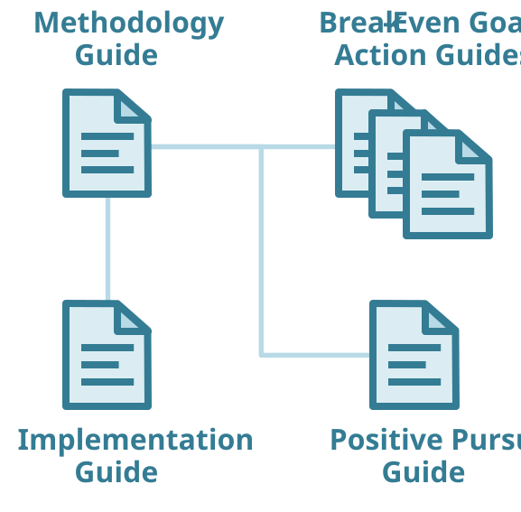

Future‑Fit Business Benchmark
Welcome
Español / Spanish  Português / Portuguese
Português / Portuguese 
Release 2.3 - June 2021
This is the first online version of the Future-Fit Business Benchmark. Please let us know if you come across any errors or have any suggestions for improvement. You can reach our team at info@futurefitbusiness.org. Thanks as ever for your help…
What is the Benchmark?
What it isn’t…
The Benchmark is not yet another sustainability reporting framework or standard. Nor does it involve filling in and sending off questionnaires for third-parties to score. And it isn’t a certification or rating system which serves primarily as a badge of honour for companies doing slightly more than their peers.
What it is: a new kind of business tool.
The Benchmark is a new kind of business tool, designed to help any company play its part in our transition to an environmentally restorative, socially just and economically inclusive future.
It defines what it takes for a business to be truly responsible and regenerative - providing a clear destination to aim for, and a way to steer towards it.
If you work with or inside a business, the Benchmark equips you to do three things:
First, it helps you set better environmental and social ambitions – ones that meet the needs of both the business and society as a whole.
Second, it provides detailed guidance on how to make and measure meaningful progress in pursuit of those ambitions.
And third, it offers a way to transform how you engage stakeholders, by shifting the narrative to focus on the future: where the company is going, how it’s working to get there, and why that is good for both the business and society as a whole.
A wide range of companies – from start-ups to global corporations – are already using the Benchmark to build a more successful business. And you can too, without restriction, because it’s published under a Creative Commons license and is completely free to use.
Finding your way around
The Benchmark comprises a suite of guides, as follows:

Methodology Guide
The Methodology Guide is the core of the Benchmark. You don’t have to read the Methodology Guide from start to finish, but it is the best place to start if you want to understand what the Future-Fit Business Benchmark is for and why it matters.Break-Even Goal Action Guides
The Break-Even Goals mark the line in the sand that every business ultimately needs to reach, to be sure it is not undermining society’s progress to future-fitness. There are 23 Break-Even Goals in total, and there is an Action Guide for each one. Every Action Guide offers in-depth advice on how to pursue and assess progress toward that goal. Practitioners focused on particular aspects of a business – from procurement and ethics, through to human resources and product design – will find plenty of useful guidance here.Positive Pursuit Guide
The Positive Pursuit Guide offers detailed advice on the range of activities a company can pursue to speed up society’s progress toward future-fitness. This includes guidance on how to credibly assess and explain the positive outcomes that particular projects or products deliver.Implementation Guide
The Implementation Guide offers supplementary advice on using the Benchmark, with topics ranging from how to assess progress toward the Break-Even Goals with incomplete data, through to designing effective management policies and processes.
If you want to get reading now, start with Why Future-Fit? in the Methodology Guide. Alternatively you may wish to watch our Crash Course. You can find a wealth of supporting resources, and meet and collaborate with other Benchmark users, in our Changemaker Community.
The Future-Fit Business Benchmark is a public good, and we would be delighted to hear about your experiences as we continue to improve it. You can reach our team at info@futurefitbusiness.org.
Licensing
To accelerate progress toward a prosperous future for all, we want to make it as easy as possible for people to use and build on our work. To that end, the Future-Fit Business Benchmark is free to use, share and modify with a few conditions.
The Benchmark is published under a Creative Commons Attribution-ShareAlike 4.0 International license, which means you are free to:
- Share – Copy and redistribute the material in any medium or format.
- Adapt – Remix, transform, and build upon the material for any purpose, even commercially.
These freedoms apply as long as you adhere to the following terms:
- Attribution – You must give appropriate credit, with a link to futurefitbusiness.org and to this license, indicating if changes have been made. You may do so in any reasonable manner, but not in any way that suggests endorsement by Future-Fit Foundation.
- ShareAlike – If you remix, transform, or build upon the material, you must distribute your contributions under the same license as the original.
- No additional restrictions – You may not apply technological measures or legal terms that legally restrict others from doing anything this license permits.
Partnering with Future-Fit Foundation
Anyone can use the Future-Fit Business Benchmark for free, and with no obligation to tell us. However, over the past few years a wide range of individuals and organisations have asked us for a way to signal that they are committed to applying the Future-Fit approach in a rigorous way.
To that end, we have developed various optional forms of accreditation – including the right to use Future-Fit logos, and to identify us as a partner – for advisors, assurers, software developers and anyone else wishing to incorporate our work into their own products and services. Contact us to find out more.
Release 2.3 Notes
A summary of the changes made to the Benchmark between Release 2.2 and Release 2.3 can be found below.
BE01: Energy is from renewable sources
Additional guidance on biomass.
BE03: Natural resources are managed to respect the welfare of ecosystems, people and animals
Additional guidance on endangered animals.
BE04: Procurement safeguards the pursuit of future-fitness
Minor formatting updates.
BE05: Operational emissions do not harm people or the environment
Additional guidance on the difference between harmful emissions, waste and water discharge.
BE07: Operational waste is eliminated
Additional guidance on the difference between waste and harmful emissions.
BE08: Operations do not encroach on ecosystems or communities
Additional guidance on endangered animals.
BE11: Employees are paid at least a living wage
Additional useful resources.
BE12: Employees are subject to fair employment terms
Minor formatting updates.
BE13: Employees are not subject to discrimination
Additional guidance on positive action and implementing the fitness criteria for this goal.
BE14: Employee concerns are actively solicited, impartially judged and transparently addressed
Minor formatting updates.
BE18: Products emit no greenhouse gases
Additional guidance on fossil-fuel based energy.
BE19: Products can be repurposed
Clarification of ACME example.
BE20: Business is conducted ethically
Minor formatting updates.
BE21: The right tax is paid in the right place at the right time
Minor formatting updates.
BE22: Lobbying and advocacy safeguard the pursuit of future-fitness
Minor formatting updates.
Positive Pursuit Guide
Clarified guidance and minor additions to PP14: Others cause less damage to areas of high social or cultural value and PP15: Areas of high social or cultural value are restored.
Implementation Guide
Additional guidance on how to calculate fitness for subsidiaries and what constitutes a formal policy.